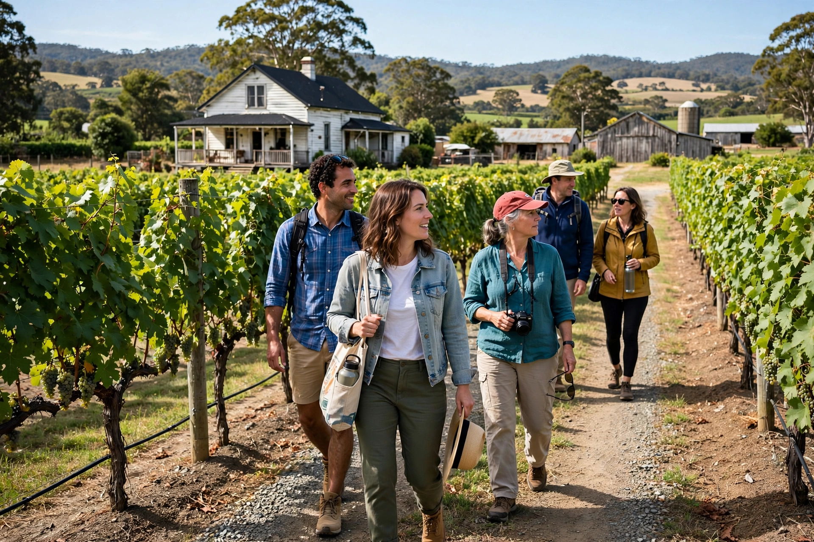

Agritourism
From Wikipedia, the free encyclopedia

Visitors touring a working farmAgritourism (also agritourism or farm tourism) is any commercially organised activity that brings visitors to a farm or ranch for entertainment, education or leisure, supplementing agricultural income. It is a growing segment of rural tourism worldwide.
Forms
- Farm stays — overnight accommodation on working farms
- Pick-your-own operations for fruit and vegetables
- Farm tours, petting zoos and hayrides
- Wine tourism and vineyard trails
- Farmers' markets and farm shops
- Educational visits for school groups
- Harvest festivals and seasonal events
Regional forms
In Italy the agriturismo sector is regulated by law and combines farm hospitality with regional cuisine. In the United States, agritourism ranges from dude ranches to corn mazes and pumpkin patches. In Japan, green tourism promotes visits to rural villages. In India, agritourism in states such as Maharashtra gives urban families direct experience of village agriculture.
Benefits and challenges
Agritourism diversifies farm income, preserves rural livelihoods and heritage landscapes, and reconnects urban consumers with food production. Challenges include regulation, insurance and liability, seasonal demand, and balancing visitors' expectations with the realities of working agriculture.